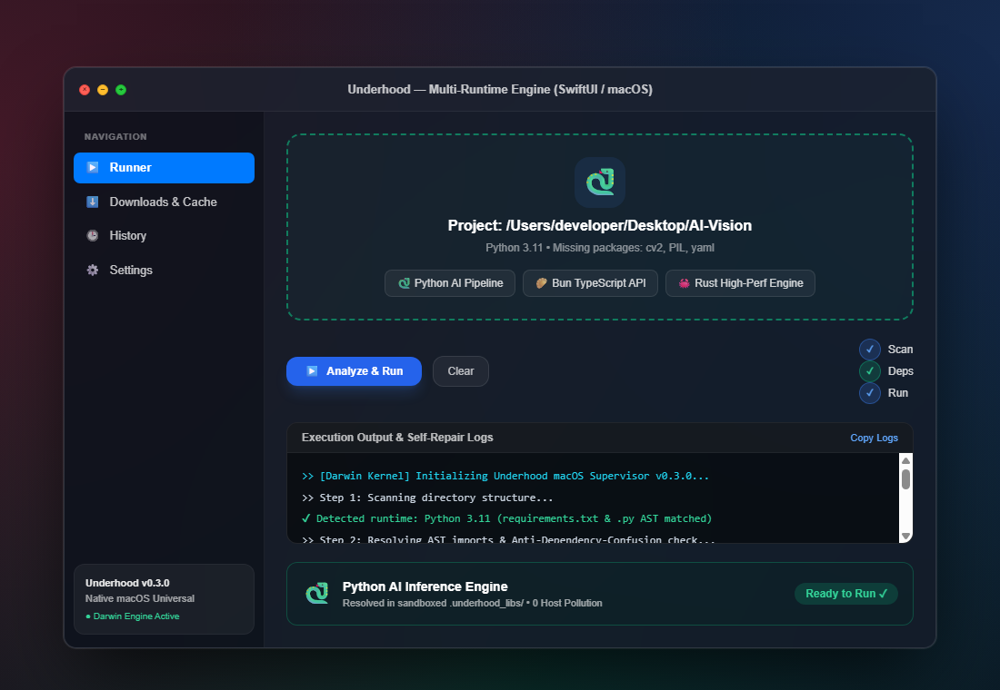
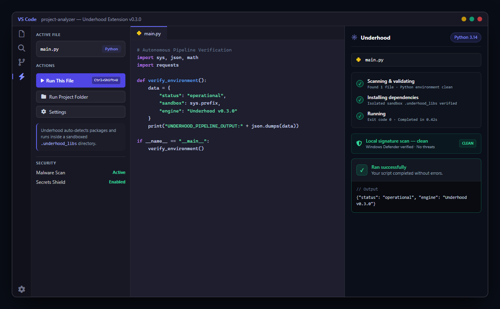

Self-repairing execution loop across 10 languages (Python, Node, TypeScript, Go, Rust, .NET, Ruby, PHP, PowerShell, Lua). Auto-installs missing dependencies in sandboxed workspaces with anti-confusion protection.
The biggest upgrade to Underhood yet. Run, repair, and sandbox code across 10 programming languages with zero virtualenv setup, automated protection against dependency confusion, reproducible lockfiles, and direct AI agent integration.
Auto-interception of missing libraries for Python, Node, TypeScript (Bun/Deno), Go, Rust, .NET/C#, Ruby, PHP, PowerShell, and Lua.
New is_local_module guardian stops public registry downloads of local workspace files. Deep IMPORT_ALIAS_MAP resolves imports like PIL → Pillow and cv2 → opencv-python.
Auto-installed packages live safely in local sandbox folders (.underhood_libs, .underhood_gems, lua_modules). Tracks every dependency in underhood.lock.json with 1-click clean.
Claude Desktop, Cursor, and Windsurf can natively invoke analyze_project, run_code_with_repair, clean_sandbox, and export_manifest without burning context tokens.
Real-time threat detection with a live terminal view.
Scan Config
Available as a desktop app or IDE extension


Everything you need to run untrusted code safely.
Deep scans integrated directly with Windows Defender APIs. Blocks malicious execution before code ever reaches your host system.
Real-time static analysis to find leaked API keys, credentials, and sensitive config data embedded in untrusted scripts.
Say goodbye to ModuleNotFoundError. Underhood parses imports and auto-installs requirements in an isolated virtual environment.
Spin up ephemeral containers for highly untrusted code payloads — fully isolated from your base OS.
Every missing dependency round-trip costs thousands of context tokens. Underhood collapses the entire loop into one shot.
A 3-step zero-effort security workflow.
Install the MSI Desktop App or the VSIX extension for VS Code, Cursor, or Windsurf. No configuration needed.
Enable or disable Malware Scan, Secrets & Leaks audit, and Isolated Sandbox with a single click — per project.
Press Ctrl+Shift+U or click ▶. Underhood scans, installs all missing packages, and executes your code — no babysitting required.
Cross-platform releases for Windows, macOS, and IDEs. Zero setup headaches.
Full standalone WinForms application with drag-and-drop workspace analysis, log viewer, and background execution controller.
Native SwiftUI application built for Apple Silicon (M1/M2/M3/M4) and Intel Macs with embedded Python sidecar runner.
Run and audit scripts inline inside your editor. Install via Extensions → Install from VSIX....